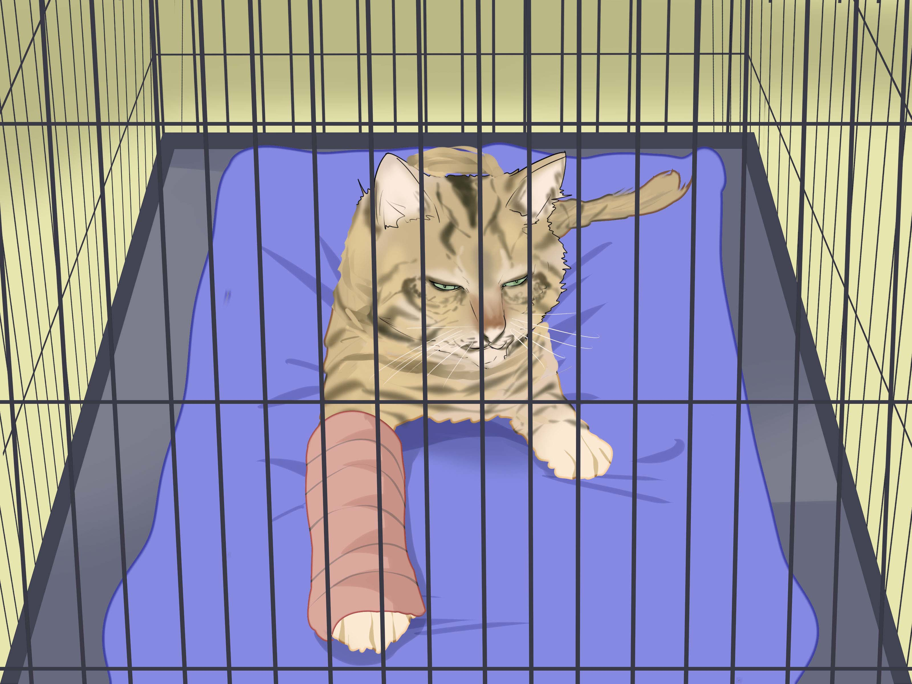

2. Fraturas ou Entorses
Evite movimentar o animal. Utilize objetos rígidos, como papelão ou revistas enroladas, para improvisar uma tala. Prenda com faixas ou panos, garantindo que não esteja muito apertado. Leve o animal ao veterinário o mais rápido possível.
